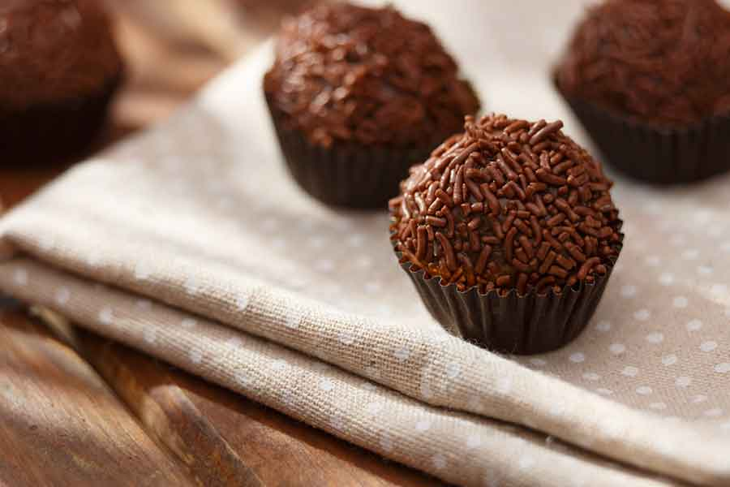
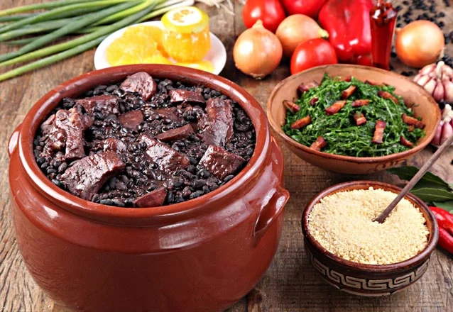
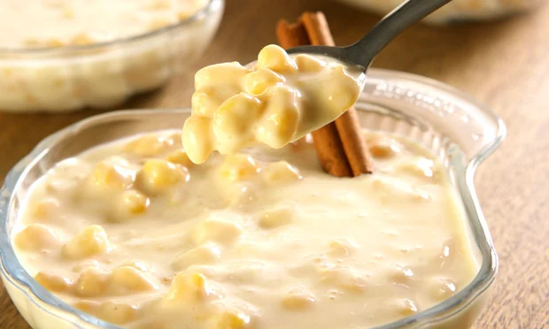
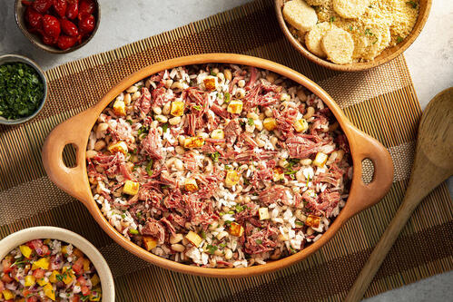

Arroz doce
Junior Silva
Bolo de fuba
por Fabiana Melo

Bolinho de chuva
por Júlio KInoto
Pao de queijo
por Juliano Vieira

Brigadeiro
por Ricardo Golvea

Feijoada
por Vania steroski
Tapioca
por Jorge Relato

Canjica
por Fabiana Melo

Baiao de dois
por Júlio KInoto